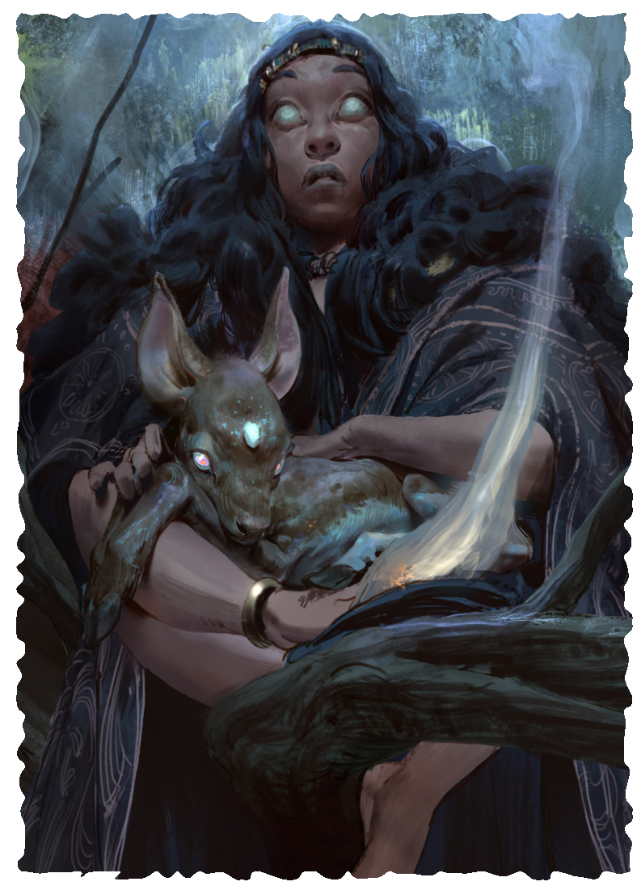

ORACLE
Oracles develop a special connection with supernatural beings, learning to invite them into their bodies to gain a measure of their power and wisdom. These beings might be gods, as many oracles believe, or they might be spirits, the souls of the dead, or something else. Regardless of the true origins of these beings, each possession strains the mind, eroding the oracle’s sanity and mental defenses over time.
When in the throes of their possession, oracles manifest physical signs of the being within their bodies. The manifestations depend on the entity. Divine possession can cause holy writing to appear on the body or a tongue of fire to burn above the head. More sinister beings cause shadows to dance, horns to grow from the oracle’s head, or a foul stench to fill the air. No matter the form these signs take, they indicate something ancient and powerful resides within the host body for a time.
LEVEL 3 ORACLE
Attributes Increase two by 1
Characteristics Health +3, Power +1
Languages and Professions Add one profession.
Magic You discover a tradition associated with your Oath (as described in the Priest novice path), or learn one spell.
Divine Ecstasy You can use an action to enter a state of divine ecstasy that lasts for 1 minute. You gain the following benefits for the duration:
- You gain a +10 bonus to Health.
- You cannot become charmed, compelled, or frightened.
- You cannot gain Insanity.
- You make Intellect, Will, and Perception attack rolls and challenge rolls with 1 boon.
When this effect ends, you must get a success on a Will challenge roll or gain 1 Insanity.
You can use this talent a number of times equal to your Power. You replenish your uses when you complete a rest.
LEVEL 6 ORACLE
Characteristics Health +3
Magic You learn one spell.
Commune with the Gods When you use Divine Ecstasy, you can choose to go into a trance. If you concentrate until the effect ends, you can ask the supernatural presence up to three questions that can be answered with a yes, no, or maybe. You then make a Will challenge roll with 1 bane. On a success, the GM must answer you truthfully. On a failure, you gain 1 Insanity.
LEVEL 9 MASTER ORACLE
Characteristics Health +3, Power +1
Magic You learn one spell.
Avatar While under the effects of Divine Ecstasy, you gain the following additional benefits:
- You gain a +1 bonus to Defense.
- You make Strength and Agility attack rolls and challenge rolls with 1 boon.
- Your attacks deal 1d6 extra damage.